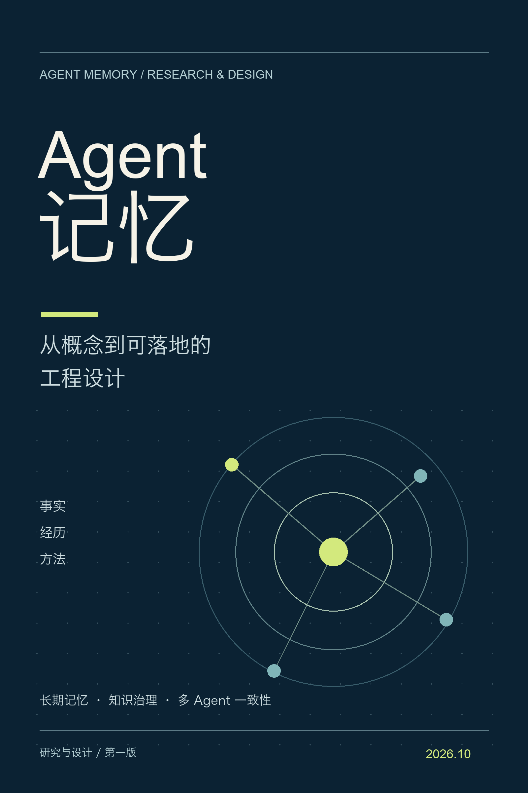

一本写给 Agent 开发者的记忆读本
让 Agent 记住，
也懂得修正与遗忘。
从事实、经历与方法出发，走向可追溯的知识、可靠的读写协议，以及能被验证的长期记忆。
五章正文 · 工程方案 · 来源附录
第一版 / 2026 年 10 月

READ THE BOOK
从理解记忆，到设计系统。
按顺序阅读，或直接进入你关心的章节。
保留知识，也保留证据。
这本书综合 AWS AgentCore、LangChain、Mem0、MachineLearningMastery 与阿里云 AI Agent Handbook，区分来源描述、设计判断与待验证目标。
正文讨论架构与协议，不把厂商基准数字当成通用承诺。所有章节均可在线阅读，也可下载 EPUB 离线阅读。
查看来源与阅读边界 →